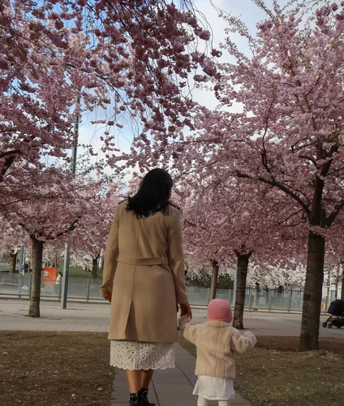
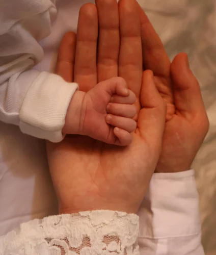

A lawyer’s precision.
A storyteller’s eye.
I’ve spent my career making complex things feel simple.
Screens, photos, words: I’ve made all three. Today I study Digital Creative at Hyper Island in Stockholm, where I bring user research, UX/UI and content together into work that feels clear and human.
From contracts
to interfaces.
I started in law, then spent six years in legal and compliance at SGS, managing B2B contracts from draft to signature. Writing ran alongside it the whole time.
I read regulations for six years. Now I design products that meet them.
Design is where it all came together. At Hyper Island I work on client briefs with real constraints: interviews, journey maps, usability testing, visual UI and content.
2009 – 2015
Law
Taught me precision
LL.B and LL.M in International Law, Tehran. I read the fine print, so I notice rules and edge cases.
2015 – 2019
Words
Taught me clarity
SMS copy at SabaIdea, SEO articles for Faramohtava and three translated books. Say more with less.
2015 – 2021
Compliance
Taught me to make rules usable
Legal Coordinator → Senior Coordinator, SGS. I turned regulations into training people could actually use.
2024 – 2027
Design
Where it all comes together
Digital Creative, Hyper Island, Stockholm. Research, UX/UI and content in one loop.
These days, I tell
people’s stories
through my camera.
I photograph families and the small, unposed moments between them: light, hands, a glance. The camera taught me to notice what people don’t say, the same attention I bring to research.


Details
Languages
- English: fluent
- Swedish: intermediate
- Persian: native
Toolkit
- Figma
- User research & interviews
- Usability testing
- Journey mapping & personas
- Wireframing & prototyping
- HTML & CSS (basic)
- AI: Claude, ChatGPT, Magnific
Looking for
Especially drawn to products where complex information needs to feel clear and human.